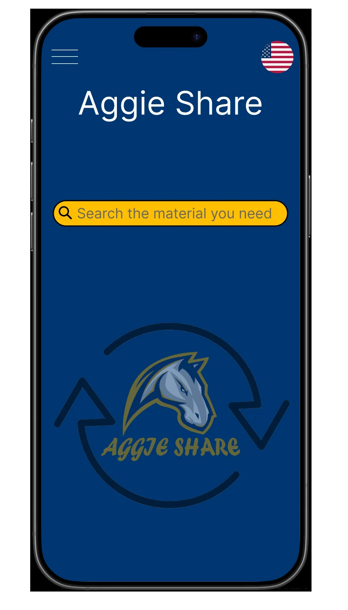
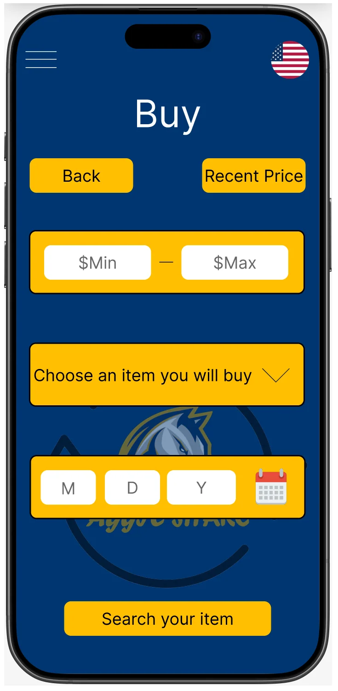
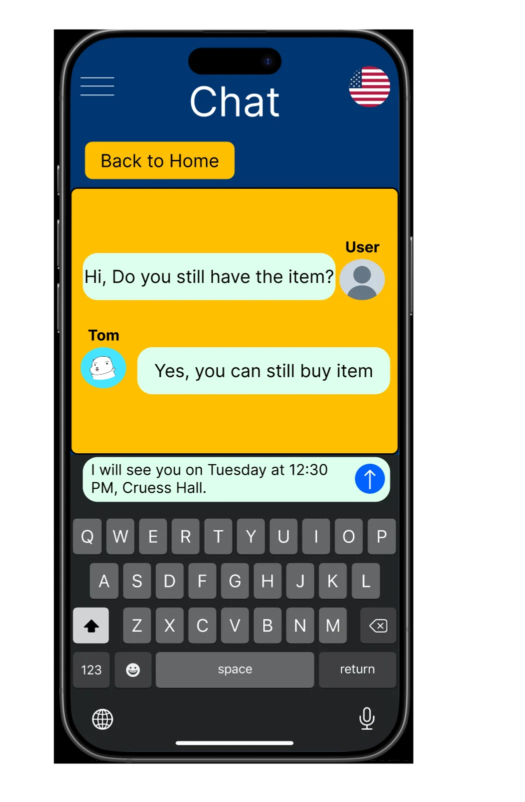
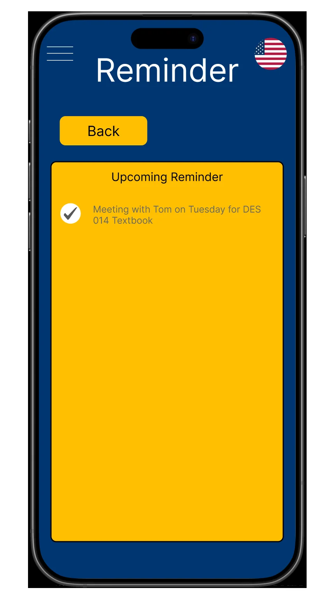

DES 112 · UI/UX DESIGN · COURSEWORK
Aggie Share — Student Marketplace
An affordable resource-sharing mobile app concept for UC Davis students, from early interviews to Figma screens.

01 / PROBLEM
Why build Aggie Share?
Textbooks, art supplies and other course materials can be costly. The project explored a campus-oriented way for students to list, find and exchange resources rather than letting unused items go to waste.
02 / RESEARCH
Start with students
The design brief records interviews with three UC Davis international students. Topics included textbook spending, hard-to-find second-hand options, and interest in sharing. All three expressed interest in a book-sharing app; reminders and trust signals were suggested. These are exploratory interviews, not a representative study.
03 / DESIGN
A campus marketplace flow
The final Figma screens show a home search, buying and selling forms, major-based browsing, chat, reminders, personal listings and a profile. The concept uses UC Davis-inspired blue and gold to create a recognizable identity.
04 / SELECTED INTERFACE SCREENS
From the original Figma exports







05 / DESIGN RATIONALE
How the research shaped the interface
The research brief records three exploratory interviews with international students at UC Davis. These findings informed the concept; they do not prove that the final interface was usability-tested.
- High textbook costs and difficulty locating used materials → focus the app on browsing and listing course resources.
- Difficulty connecting students who need and have materials → include buy/sell flows and direct chat screens.
- Interview suggestions about notifications and trust → explore reminders; ratings and verification remain unvalidated ideas.
06 / INFORMATION FLOW
A clear path from discovery to contact
The supplied Figma exports show a conceptual sequence: search or browse by major, inspect relevant listings, use the buying or selling screen, and continue the conversation through chat. Screens for reminders, posts and profile support returning to the app.
07 / LIMITATIONS & NEXT STEPS
What I would validate next
These are recommended next steps, not completed tests or reported outcomes.
- Ask students to find a textbook for a specific class and observe where the search or major filters cause confusion.
- Test whether buyers understand the transition from listing to chat and whether sellers can create a listing without assistance.
- Prototype clearer trust cues before claiming any verified identity or rating functionality.
08 / SCOPE
A designed prototype, not a launched service
The uploaded files document a proposal, exploratory research, and interface screens. They do not establish a live marketplace, completed transactions, usability test outcomes or measured impact.
ORIGINAL COURSE MATERIALS
Explore the source
View the submitted research and proposal alongside the Figma design link provided in the archive.